WRFT 2023 – szezonelemzés
Gyorsak vagyunk. A futamokat a hibák miatt veszítjük el.
A Wild Runners Flyball Team 2023-as szezonja: 11 verseny, 20 versenynap, 7 csapat, 50 kutya, 1 116 lefutott futam.
Összefoglaló
Kutyáink ugyanolyan gyorsak, mint a többieké – a futamokat a hibák miatt veszítjük el. Három fejlesztési lehetőség egyenként kb. 26–28 plusz győzelmet ér egy szezonban.
A kutyák jellemző (medián) futási ideje: WRFT 4,28 mp, a többi csapat 4,27 mp. A megnyert futamok aránya: WRFT 40,8%, a többi csapat 45,6%. A különbséget a hibák okozzák.
Ugyanaz a négy kutya, jobb sorrendben – négy csapatnál. Már a következő versenyen bevezethető, semmibe sem kerül.
Ha az első versenynapon is annyi hibátlan futam lenne, mint a másodikon. Hogy miért rosszabb a szombat, még ki kell deríteni.
Csapatonként egy-két jellemző hiba (rajt, váltás vagy futás) célzott gyakorlása, amíg a divízió többi csapatának szintjére nem javul.
- 1. kérdés · A pálya színe
- Gyakorlatilag nem számít (+0,006 mp futásonként). Nem kell vele foglalkozni.
- 2. kérdés · Kire vált a kutya
- A váltótárs neme és ivarállapota nem befolyásolja mérhetően a teljesítményt. Egy érdekesség: ivaros kanokra gyakrabban tartják vissza a váltást.
- 3. kérdés · Versenyenként
- 20 versenynapból 4 napon maradtunk el a divízió többi csapatától – mindig a hibák, soha nem a sebesség miatt.
- Időjárás
- Csak a 20 °C feletti meleg lassít: minden további 10 °C futásonként +0,083 mp. A páratartalom, a szél és az eső nem számít.
- Ideális összeállítás
- Legjobb négyes: Maggie › Enola › Pax › Alfie, várhatóan 19,28 mp futamonként. Biztos alapemberek: Enola, Alfie, Maggie.
Plusz győzelem: ennyivel több futamot nyerne a WRFT egy szezonban más klubok csapatai ellen. A számok utáni zárójeles tartomány a becslés 95%-os bizonytalansági tartománya: a valódi érték nagy valószínűséggel ebbe esik.
A szezon egy pillantásra
20 versenynap, 1 116 futam, 7 °C és 34 °C között
Minden kis négyzet egy WRFT-versenynap: a nagy szám a hibátlan futamok aránya, alatta a győzelmeké. Kattints egy napra a részletekért.
- Hibátlan futamok aránya: WRFT 54,4%, a többi csapat 56,6%.
- Korai rajt a futamok 15,8%-ában (a többi csapatnál 10,6%) – ebben van a legnagyobb különbség.
- A ▲ jelű 4 napon kevesebb futamot nyertünk, mint a divízió többi csapata.
Mitől nyerünk futamot?
Hibátlan futammal 85% eséllyel nyerünk, ha az ellenfél hibázik; ha mi hibázunk, csak 9% eséllyel
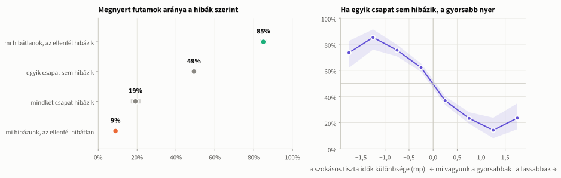
- Jó eredménynek a megnyert futamot tekintjük.
- Az, hogy ki hibázott, kb. tizenötször jobban megmagyarázza a futam kimenetelét, mint a csapatok szokásos sebessége.
- Egy hiba javítása (újrafutás) kb. 7,8 mp–8,3 mp időbe kerül – többe, mint szinte bármelyik két csapat sebességkülönbsége.
Hanácké, a szezon első versenye: a Hopefuls több mint két másodperccel gyorsabb volt, mégis kikapott egy korai váltás miatt
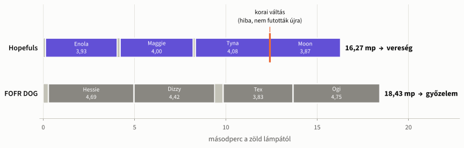
- A WRFT 660 elvesztett futamának 62,1%-ában saját hiba is volt.
- 155 vereség (23,5%) elkerülhető lett volna: hiba miatt veszett el, pedig aznapi szokásos tiszta idejével a csapat nyert volna.
- Ez a dia az egész elemzés röviden: a sebesség megvan, a futamokat a hibák viszik el.
A lehetőségek rangsora
Minden javaslatot ugyanazzal mérünk: hány futammal nyernénk többet egy szezonban?
Plusz győzelem szezononként a más klubok elleni 907 futamban (ezek 39,0%-át nyertük meg); a vonal a 95%-os bizonytalansági tartomány. A felső szürke sáv (egyáltalán nincs saját hiba) csak viszonyítási pont, nem cél. Vidd az egeret egy sávra a részletekért.
- Három nagyjából egyforma súlyú lehetőség: futási sorrend +27, szombati nap +28, visszatérő hibák +26.
- A pálya színe és a váltótárs neme nem számít – ezekkel nem kell foglalkozni.
- A meleg csak néhány futamot ér (+3), mert az ellenfeleket is lassítja: ez inkább a kutyák jólléte miatt fontos.
A teljes rangsor: mind a 39 lehetőség táblázatban
- Alap: a más klubok elleni 907 futam (39,0% győzelem); a bizonytalansági tartományt 2 000 szimulációval becsültük.
- Az összeállításoknál a mostani és a javasolt felállást hasonlítottuk össze, a csapat legutóbbi versenyének ellenfeleivel szemben.
- A lehetőségek átfedik egymást, ezért nem adhatók össze; a kutyacserék nyeresége optimista becslés.
Első lehetőség · Futási sorrend
Négy csapatnál már a sorrend átrendezése kb. 27 plusz győzelmet hoz – ingyen, a következő versenytől
- Cookies
- Enola
- Maggie
- Tyna
- Maggie
- Tyna
- Cookies
- Enola
- Rex
- Rocky
- Scotty
- Gordon
- Rocky
- Rex
- Gordon
- Scotty
- Rex
- Hank
- Gerry
- Bailey
- Gerry
- Bailey
- Rex
- Hank
- Nina
- Brooke
- Bree
- Alex
- Bree
- Brooke
- Alex
- Nina
Már most is (majdnem) a legjobb sorrendben fut: Wonders, Dreamers, Nightfall.
- A nyereség nagy része azon múlik, ki rajtol: Cookies 51 rajtjából 37,2% volt korai.
- A gyors rajtolók egyben a legmegbízhatóbbak is: a leggyorsabban rajtoló kutyáknál 8,3%, a lassabbaknál 15,7% a korai rajt aránya.
- Maggie eddig csak 14-szer rajtolt (hiba nélkül); a kipróbált megoldás Enola (156 rajt).
Második lehetőség · A szombati nap
Ugyanazok a csapatok vasárnap 16 százalékponttal több hibátlan futamot futnak – ha a szombat is ilyen lenne, az kb. 28 plusz győzelem
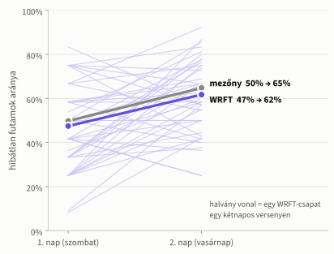
- Ugyanaz a csapat ugyanazon a versenyen, az időjárás és az akadálymagasság hatását kiszűrve: a második napon a hibátlan futamok aránya +16,0 százalékpont (9,5–22,5) (WRFT); a mezőnyben +18,9 százalékpont.
- Rajtonként −10,0 százalékpont korai rajt; a korai rajtos futamok aránya −11,6 százalékpont, a korai váltásosaké −8,2 százalékpont.
- A sebesség nem változik (±0,000 mp futásonként): nem a kutyák fáradnak vagy frissülnek, hanem a rutin más.
- Az ok egyelőre ismeretlen: izgalom, új pálya, utazás, bemelegítés vagy a szombati versenyrend.
Harmadik lehetőség · Visszatérő hibák
Minden csapatnak van egy jellemző, edzéssel javítható hibája: az XXL-nek a rajt, a Zephyrnek a futás, a Hopefulsnak a váltás
Azok a WRFT-kutyák, akiknek legalább 20 értékelhető futásuk volt: jellemző futási idő és korrigált hibaarány (rajt, váltás, futás). Narancs: edzési célpont, lila: a legjobb négyes tagja. Vidd az egeret egy pontra a részletekért.
| Csapat | Lemaradás a divízióhoz képest | Érintett kutyák (hibaarány) | Plusz győzelem |
|---|---|---|---|
| XXL | korai rajt +20,0 százalékpont | Scotty 44%, Negro 38%, Rex 24% | +3,6 |
| Zephyr | futási hiba +7,9 százalékpont | Ted 32% | +4,4 |
| Hopefuls | korai váltás +5,8 százalékpont | Moon 17%, Maggie 12% | +3,0 |
| Maximini | korai váltás +4,2 százalékpont (lehet véletlen is) | Bree 13%, Bella 11% | +2,8 |
- Ne erőltessük a még szorosabb váltást: a WRFT jellemző váltási ideje 0,20 mp (a többi csapaté 0,15 mp), ez már a biztonságos tartományban van (0,12–0,35 mp).
Próbáld ki
Összeállítás-tervező
Válassz négy kutyát és sorrendet: a program kiszámolja a várható futamidőt, a hibátlan futam esélyét és az akadálymagasságot – ugyanúgy, ahogyan a 2 686 320 lehetséges sorrendet is végigszámoltuk.
Várható futamidő = rajt + négy futás (a legkisebb kutya akadálymagasságán) + három váltás + a várható hibák száma × 8,0 mp újrafutás. Rajtolóként csak olyan kutyára van megbízható adat, amelyik legalább 10-szer rajtolt.
- Hibák nélkül
- –
- A hibátlan futam esélye
- –
- Akadálymagasság
- –
- Várható hibák száma
- –
Az edző kérdései · 1. és 2.
Sem a pálya színe, sem a váltótárs neme vagy ivarállapota nem befolyásolja a teljesítményt
Q1 · Pálya színe
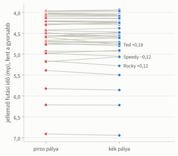
- Ugyanaz a kutya a kék pályán futásonként mindössze 0,006 másodperccel lassabb (az egész mezőnyben); a WRFT-kutyáknál a különbség +0,006 mp (−0,006 … 0,018).
- Kimutattuk, hogy a különbség kisebb 0,05 mp-nél, vagyis gyakorlatilag nincs; a 28 ring és nap közül a legnagyobb eltérés is csak 0,032 mp.
Q2 · Váltótárs neme, ivarállapota
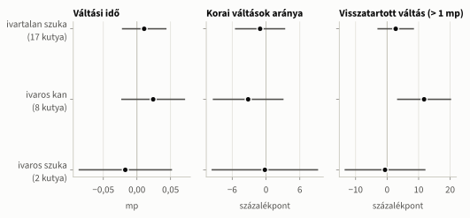
- 3 260 WRFT-váltást vizsgáltunk; egyik kategóriánál sincs valódi (nem véletlennek tulajdonítható) különbség. Ivaros szuka csak 2 van, ivaros kan 8.
- Érdekesség: ivaros kanra gyakrabban tartják vissza a váltást (több mint 1 másodpercig): +10,6 százalékpont (3,1–18,1).
Az edző kérdései · 3. versenyenként
A rossz napok hibás napok voltak: 20 versenynapból 4 napon maradtunk le, de soha nem a sebesség miatt
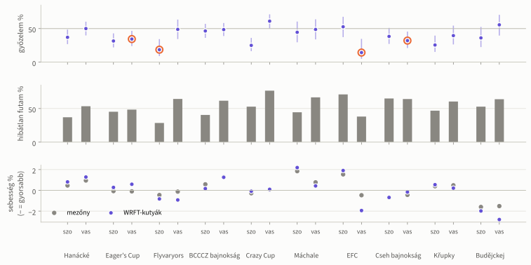
- A WRFT tiszta ideje egyetlen napon sem maradt el a divízió többi csapatáétól.
- Ugyanazok a kutyák a saját átlagukhoz képest napról napra −2,0% és +1,9% között futottak; a meleg napokon voltak a leglassabbak.
- A szezon során a kutyák gyorsultak: havonta −0,29% (−0,36 … −0,22).
Versenynapok részletesen
Válassz egy versenynapot: a WRFT-csapatok eredményei, hibái és az aznapi időjárás.
Időjárás
Csak a 20 °C feletti meleg lassít: minden további 10 °C futásonként 0,083 másodperccel – és ugyanígy lassítja az ellenfeleket is
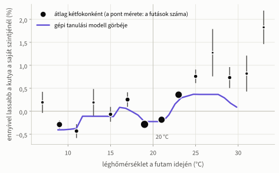
| ▲ | Hőmérséklet | igazolva, 20 °C felett +0,083 mp (0,050–0,117) minden további 10 °C |
|---|---|---|
| ● | Páratartalom | van hatása, de elhanyagolható +0,018 mp minden további 20 százalékpont |
| ● | Szél | nincs hatása −0,007 mp minden további 3 m/s |
| ● | Eső | nincs hatása −0,005 mp eső után |
- Egy 10 °C-kal melegebb napon ez futamonként kb. 0,33 mp (+1,95% futásonként).
- Az időjárás és az évszak együtt a versenynapok közötti sebességkülönbségek 77%-át magyarázza.
- Teendők 22 °C felett: árnyék, hűtés, víz, rövidebb bemelegítés, kutyánként kevesebb futam.
Kutyák
A kutyák adatai
Mind a 50 WRFT-kutya. Az oszlop fejlécére kattintva rendezhetsz, a keresőmezővel szűrhetsz.
Ideális összeállítás
A legjobb csapat alapja Enola, Alfie és Maggie, negyediknek Pax illik melléjük – kis „magasságadó” kutya nem éri meg
- 2 686 320 lehetséges sorrendet számoltunk végig (42 kutyából, akiknek legalább 20 értékelhető futásuk volt).
- Legjobb négyes: Maggie › Enola › Pax › Alfie – várhatóan 19,28 mp futamonként, hiba nélkül 16,60 mp; a hibátlan futam esélye 70,5%.
- 50 véletlenszerű újraszámolásból Enola mindig (100%) bekerül a legjobb négyesbe, Alfie az esetek 72%-ában, Pax 58%-ában, Maggie 56%-ában.
- Kis kutya csak az alacsonyabb akadályért: amit a társak nyernek, kevesebb, mint amennyit a kis kutya lassabb futása elvesz (Easy −0,55 mp, Gordon −2,43 mp futamonként).
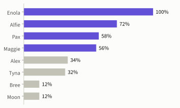
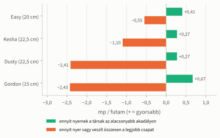
* Korrigált arány: kevés próbálkozásnál a csoportátlag felé igazítva, hogy egy-két véletlen hiba ne torzítson. Összevethető futás: a kutya becsült futási ideje huszonöt centis akadályon, első helyen futva – így a különböző magasságon futó kutyák is összehasonlíthatók.
Teendők
Kilenc lépés, mindegyikhez egy mérhető cél – kezdjük a futási sorrenddel a következő versenyen
| # | Teendő | Ki | Mikor | Mivel mérjük | 2023 → cél |
|---|---|---|---|---|---|
| 1 | A javasolt sorrendek bevezetése (Hopefuls, Zephyr, XXL, Maximini) | edző | következő verseny | korai rajtos futamok aránya | 15,8% → legfeljebb 10,6% |
| 2 | Csak megbízható rajtoló kutya kezdjen; Maggie rajtolását edzésen ki kell próbálni | edző, felvezetők | most | a rajtoló kutya korai rajtjainak aránya | Cookies 37% → a mezőny szintje |
| 3 | Szombaton is a vasárnapi rutin szerint készülni; mindkét napot feljegyezni | edző | következő kétnapos verseny | különbség az első és a második nap hibátlan futamai között | 16 százalékpont → minimális |
| 4 | Rajtgyakorlás: Scotty, Negro, Rex | felvezetők | versenyszünet | az XXL lemaradása korai rajtban a divízióhoz képest | 20 százalékpont → nulla |
| 5 | A futási hibák gyakorlása (fordulás a doboznál, labdafelvétel): Ted, mielőtt újra versenyez | felvezető | versenyszünet | Ted futási hibáinak aránya | 32% → a mezőny szintje |
| 6 | Váltásgyakorlás a biztonságos tartományra (0,12–0,35 mp): Moon, Bree, Maggie | felvezetők | versenyszünet | korai váltások aránya | Moon 17%, Bree 13% → a mezőny szintje |
| 7 | Teendők meleg napokra, 22 °C felett | edző | nyári versenyek | a kutyák jólléte; sebesség a meleg napokon | – |
| 8 | Döntés Paxról; a legjobb csapatot Enola, Alfie és Maggie köré építeni | edző | a 2024-es szezon előtt | a legjobb csapat tiszta ideje | a négy futás együtt kb. 16,0 mp |
| 9 | Az adatgyűjtés folytatása: ugyanazok a táblázatok, plusz a szombati rutin, a visszatartott váltások és hogy fedett vagy szabadtéri-e a pálya | edző | minden verseny | naprakész kutya-adatlapok | – |
Öt kérdés, amelyre az adatok nem adnak választ
- Versenyezhet-e Pax 2024-ben? Júliusban futott utoljára, és benne van a legjobb négyesben.
- Mi más szombatonként? Az érkezés, a bemelegítés, a gyakorlási lehetőség vagy a versenyrend?
- Tud-e Maggie rajtolni? Eddig csak 14-szer rajtolt, mindig hibátlanul.
- Szándékosan tartják-e vissza a váltást a fiatal ivaros kanokra?
- Volt-e fedett pályás verseny? Az időjárás elemzésénél minden versenyt szabadtérinek vettünk.
Módszer és korlátok
Mennyire bízhatunk az eredményekben?
- Adatok: 28 versenynap 8 543 csapateredménye, ellenőrizve és lépésenként dokumentálva (rejtett színkódok kiolvasása, elcsúszott sorok javítása, hibás adatok kiszűrése).
- Elemzés: minden kutyát önmagához hasonlítottunk (ugyanaz a kutya, ugyanazon a napon), így a kutyák közötti különbségek nem torzítanak. A sok párhuzamos vizsgálat miatt szigorúbb küszöböt alkalmaztunk, a „nincs hatás” állításokat pedig külön teszttel igazoltuk.
- Időjárás: Open-Meteo (kb. tíz kilométeres rácsra számolt adatok), nem helyszíni mérés; az esőt csak úgy vettük figyelembe, hogy esett-e.
- A „mi lenne, ha” becslések a múltbeli adatokból készültek: a lehetőségek sorrendjét jól mutatják, de pontos eredményt nem ígérnek.
- A WRFT-ről kevés az adat (7 csapat, 50 kutya), ezért ahol lehetett, az egész mezőnyön (903 kutya) számoltunk, és a WRFT-n ellenőriztünk.
- Egy-egy futamról nem lehet előre megmondani, lesz-e benne hiba: ez nagyrészt a véletlenen múlik, a modell itt alig jobb a pénzfeldobásnál. A kutyák közötti különbség viszont valódi, és egy szezon alatt összeadódik (Cookies rajtjainak 37%-a korai, Enoláénak 10%-a). Ezért a javaslatok nem egy-egy futamot ígérnek, hanem kevesebb hibát egy egész szezonra.
Részletes ábrák és táblázatok (függelék)
Csapatok a divízió többi csapatához képest: Minden csapatnak más a gyenge pontja: az XXL a rajtban, a Zephyr a futásban, a Hopefuls a váltásban marad le
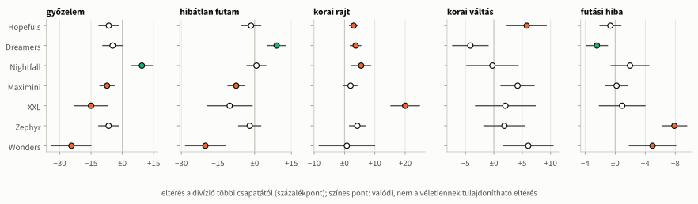
Mitől nyerünk futamot – a modell: A futam kimenetelét a hibák döntik el; a sebesség csak hibátlan futamok között számít
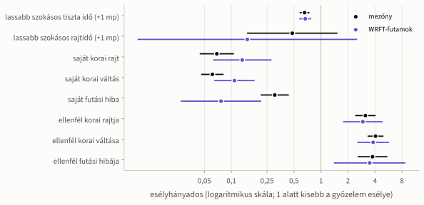
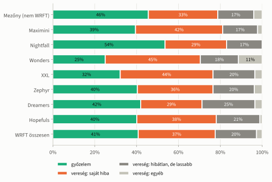
Rajt és váltás: A gyors rajt egyben biztonságos is; a túl szoros váltás viszont kockázatos
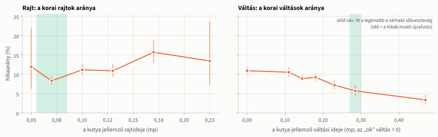
- Korai váltás: a legszorosabban váltó kutyáknál 10,9%, a középmezőnyben 5,7%, a legóvatosabbaknál 3,4%.
1. kérdés részletesen: Egyik versenynapon és ringben sem volt számottevő különbség a két pálya között
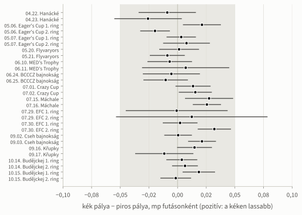
- Szürke sáv: ±0,05 mp – ennél kisebb különbség a gyakorlatban nem számít.
- Az egész mezőnyben: +0,006 mp (0,003–0,010) futásonként – kimutatható, de elhanyagolható.
- A WRFT-kutyáknál: +0,006 mp (−0,006 … 0,018) – gyakorlatilag nulla.
- A pályát mérkőzésenként sorsolják (az elsőként szereplő csapat mindig a kéken fut), a csapatok tehát nem választanak.
- A rajt, a váltás és a hibák aránya sem különbözik a két pályán.
Kutyák versenyenként: Hol futottak a kutyák gyorsabban vagy lassabban a saját szezonbeli formájuknál?
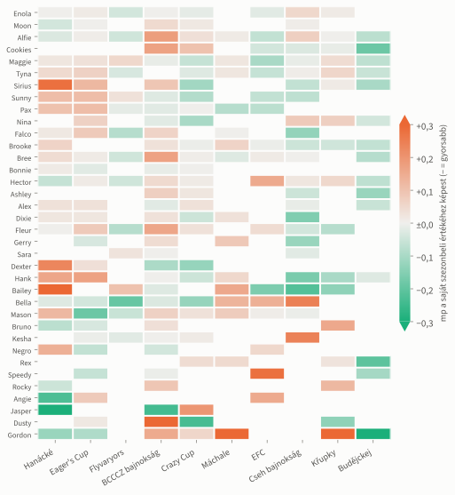
Időjárás – ellenőrzések: A meleg hatása minden ellenőrzésben megmarad; a többi tényező hatása nulla közeli
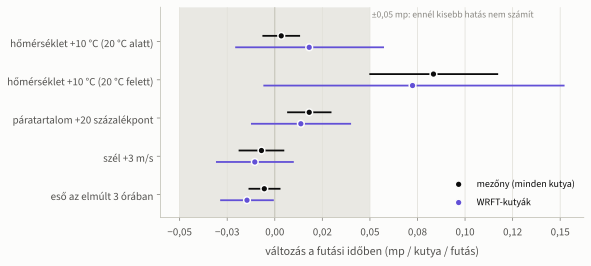
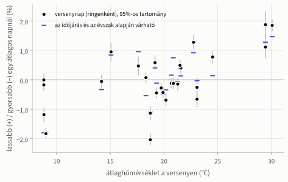
- 20 különböző módon is újraszámoltuk (versenyenként kihagyva egyet-egyet, más hőmérsékleti határral, hőérzettel, nedves talajjal, széllökésekkel stb.), plusz napon belül és csak a WRFT-kutyákra.
- Egy gépi tanulási modell (gradient boosting) ugyanezt a görbét adja.
Az összeállítások várható ideje: Honnan jön a sorrend nyeresége? Főleg abból, hogy kevesebb a várható hiba
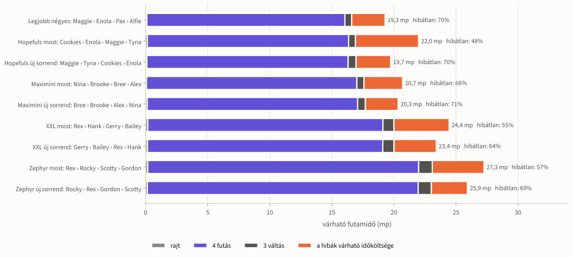
Utólagos ellenőrzés és tartalékok: A tavaszi–nyári adatokból számolt modell jól előre jelezte az őszi futamokat
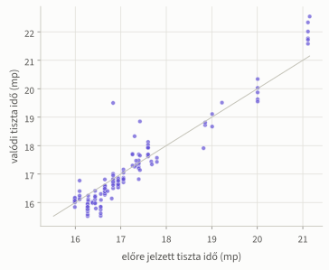
| Tartalék | Kit vált | Összeállítás | Várható idő | Különbség |
|---|---|---|---|---|
| Tyna | Pax | Maggie › Alfie › Tyna › Enola | 19,35 mp | +0,07 mp |
| Alex | Pax | Maggie › Alfie › Alex › Enola | 19,41 mp | +0,13 mp |
Csapatok: A hét WRFT-csapat 2023-ban
| Csapat | Futam | Győzelem | Hibátlan futam | Jellemző tiszta idő (mp) | Korai rajtos futam | Korai váltásos futam | Futási hibás futam | Jellemző rajt (mp) | Jellemző váltás (mp) | Jellemző futás (mp) |
|---|---|---|---|---|---|---|---|---|---|---|
| Maximini | 228 | 39% | 50% | 17,44 | 14% | 27% | 5% | 0,10 | 0,20 | 4,29 |
| Nightfall | 153 | 54% | 59% | 17,36 | 15% | 23% | 6% | 0,10 | 0,20 | 4,27 |
| Wonders | 44 | 25% | 34% | 21,59 | 16% | 20% | 11% | 0,10 | 0,31 | 4,75 |
| XXL | 115 | 32% | 43% | 21,30 | 32% | 22% | 7% | 0,17 | 0,36 | 5,03 |
| Zephyr | 214 | 40% | 55% | 18,58 | 14% | 21% | 14% | 0,12 | 0,25 | 4,64 |
| Dreamers | 174 | 42% | 64% | 16,59 | 15% | 20% | 3% | 0,08 | 0,15 | 4,13 |
| Hopefuls | 188 | 40% | 57% | 16,09 | 11% | 31% | 2% | 0,11 | 0,14 | 4,01 |
| Mezőny (nem WRFT) | 7 348 | 46% | 57% | 17,48 | 11% | 22% | 6% | 0,10 | 0,15 | 4,27 |
| WRFT összesen | 1 116 | 41% | 54% | 17,33 | 16% | 24% | 6% | 0,11 | 0,20 | 4,28 |
2. kérdés részletesen: Váltások a beérkező kutya neme és ivarállapota szerint – a nyers különbségek mögött a kutyák kora áll
| Beérkező kutya | Váltás | Kutya | Jellemző kor (év) | Jellemző váltás (mp) | „ok” váltás | Korai váltás | Visszatartott váltás | A kifutó kutya jellemző futása (mp) |
|---|---|---|---|---|---|---|---|---|
| ivartalan kan | 1 167 | 19 | 5,7 | 0,22 | 25% | 9,2% | 5,9% | 4,48 |
| ivartalan szuka | 1 365 | 17 | 4,8 | 0,17 | 31% | 9,8% | 3,0% | 4,20 |
| ivaros kan | 515 | 8 | 1,9 | 0,26 | 19% | 5,8% | 8,0% | 4,52 |
| ivaros szuka | 213 | 2 | 2,3 | 0,12 | 43% | 11,7% | 2,1% | 4,12 |
- Az ivaros kutyák jóval fiatalabbak, ezért a modell a kort és a csapatot is figyelembe veszi.
- Egyik mutatónál sincs valódi különbség (váltási idő, „ok” váltások aránya, korai váltás, a kifutó kutya futási ideje).
- Érdekesség: ivaros kanra gyakrabban tartják vissza a váltást (több mint 1 másodpercig): +10,6 százalékpont (3,1–18,1).
A második nap: A második nap előnye a rajtban és a váltásban jelentkezik, nem a futásban
- Hibátlan futamok a második napon: WRFT +16,0 százalékpont (9,5–22,5), mezőny +18,9 százalékpont (15,9–21,9).
- Korai rajt rajtonként: −10,0 százalékpont (−13,4 … −6,7).
- Futamonként: korai rajtos futamok −11,6 százalékpont (−14,5 … −8,7), korai váltásos futamok −8,2 százalékpont (−14,6 … −1,8); a futási hibák száma nem változik.
- Futási idő: ±0,000 mp (−0,009 … 0,009) futásonként – a sebesség ugyanaz.
- Kiszűrtük: a csapatot, a versenyt, az időjárást, az akadálymagasságot és azt, hogy hányadik futam volt aznap.
- Ha a második napot nem vettük figyelembe, úgy tűnt, mintha a melegben több lenne a hiba – valójában ez a szombat–vasárnap különbség volt.
Adatok és ellenőrzés: Három Excel-fájlból ellenőrzött, bármikor újra előállítható táblázatok
- Források: a kutyák alapadatai, valamint a cseh (FLYBALLCZ) és az EFC versenyeredmények – 11 verseny, 28 versenynap, 8 543 csapateredmény (a 28 gyakorló futamot kihagytuk).
- Rejtett jelölések: a pálya színét a csapatnév betűszíne, egyes hibákat a cella piros betűszíne jelzi – mindkettőt kiolvastuk.
- 19 sor egy cellával el volt csúszva (egy „vběhl” bejegyzés után a váltás cellájában); ez okozta az összes negatív futási időt, kijavítottuk.
- A cseh bajnokság valójában szeptember második–harmadik napján volt (a forrásban egy nappal későbbi dátum szerepel); ezt az interneten ellenőriztük.
- Az „ok” jelű váltás nem pontosan nulla, hanem egy nagyon kicsi, nyolc századmásodperc alatti érték; ezért ahol lehetett, mediánnal számoltunk.
- Kiszűrt adatok (mindegyiknél megnéztük, változik-e az eredmény nélkülük): gyakorló futamok, nulla összidő, „0” nevű kutya, irreálisan gyors vagy lassú futás, egy-egy kutya kiugró értékei, túl hosszú váltás.
- Ellenőrzés: automatikus tesztek, kézi szúrópróba az Excel-fájlokkal, és minden lépés futtatható programja ugyanazt az eredményt adja újra.
Szómagyarázat
- Futam
- Két csapat egy menete a rajttól a bíró sípjáig; egy mérkőzés több futamból áll.
- Hibátlan futam
- Mind a négy kutya lefutott, nem volt hiba és újrafutás.
- Tiszta idő
- A négy kutya futási idejének összege hibátlan futamban, a rajt és a váltások nélkül.
- Korai rajt
- Az első kutya a zöld lámpa előtt lépi át a vonalat.
- Korai váltás
- A következő kutya azelőtt lépi át a vonalat, hogy az előző visszaért volna.
- Futási hiba
- Kihagyott akadály, kifutás vagy elejtett labda; újra kell futni.
- A divízió többi csapata
- Azok a csapatok, amelyekkel a WRFT csapata ugyanazon a versenyen, ugyanabban a divízióban futott.
- Mezőny
- Az összes többi, nem WRFT-csapat a 2023-as versenyeken.
- Elkerülhető vereség
- Hiba miatt elvesztett futam, amelyet a csapat az aznapi szokásos tiszta idejével megnyert volna.
- Plusz győzelem
- Ennyivel több futamot nyerne a WRFT egy szezonban más klubok ellen, ha a javaslat megvalósulna.
- Bizonytalansági tartomány
- A számok után zárójelben: a becslés 95%-os tartománya. A valódi érték nagy valószínűséggel ebbe esik.
- Valódi (szignifikáns) különbség
- Olyan eltérés, amely nem magyarázható a véletlennel. Mivel sok dolgot vizsgáltunk egyszerre, szigorúbb küszöböt (Holm-korrekció) alkalmaztunk.
- Korrigált arány
- Kevés próbálkozásnál a kutya hibaarányát a csoportátlag felé igazítjuk, hogy egy-két véletlen hiba ne torzítson.
- Magasságadó kutya
- Kis kutya, akinek a marmagassága miatt az egész csapat alacsonyabb akadályon fut.